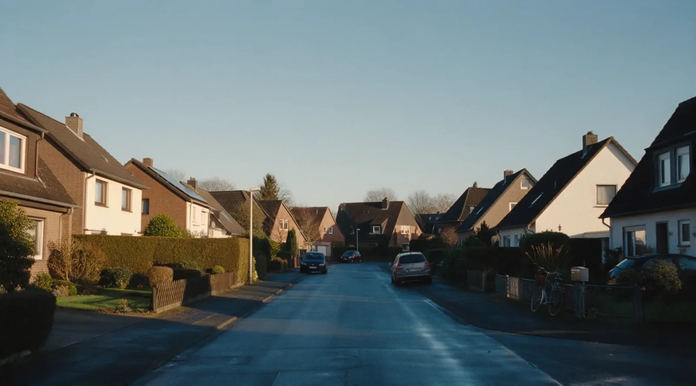
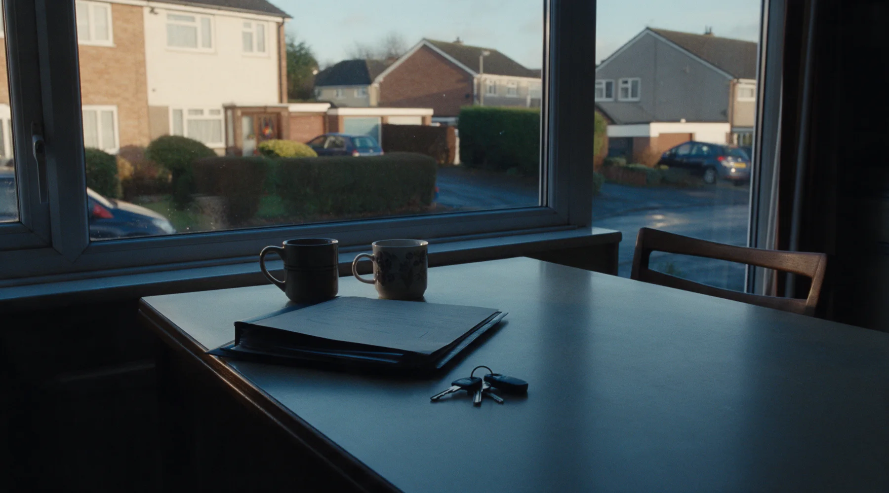
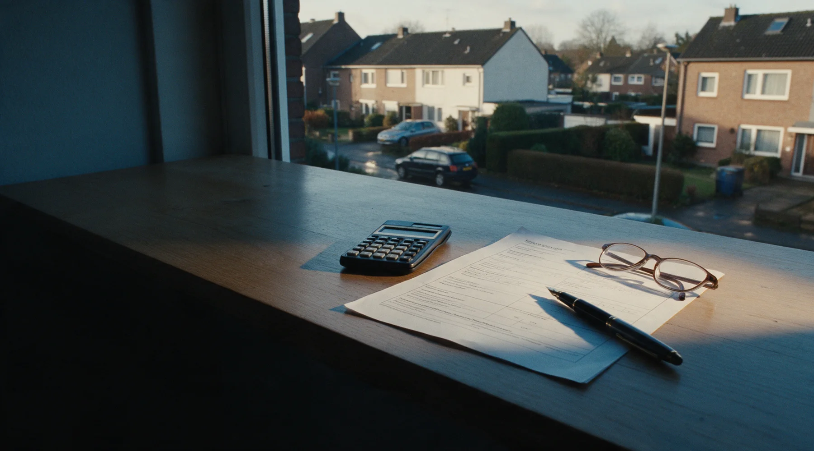
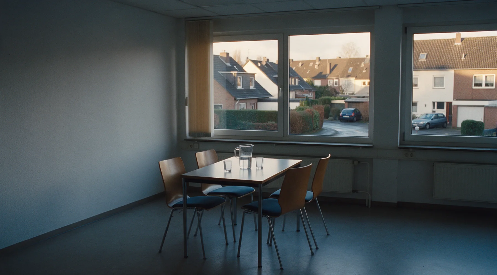

Hinter jeder dieser Türen wohnt irgendwann eine Entscheidung.
Meistens trifft sie nicht einer allein. Genau dann werde ich gerufen.

Ein Todesfall. Eine Trennung.
Ein Umzug ins Alter.
Drei Anlässe, ein gemeinsamer Nenner: Über die Immobilie müssen mehrere Menschen zusammen entscheiden, und keiner von ihnen hat sich diese Lage ausgesucht.

Das Finanzamt erkennt meine Bewertungen an.
Ich komme aus dem Bankgeschäft. Im Erbfall entscheidet das darüber, ob die Steuer auf einem realistischen Wert beruht oder auf einer Schätzung, gegen die sich die Familie hinterher wehren muss. Formulierung noch mit Andreas abzustimmen

Wir beginnen mit einem 30-minütigen Gespräch.
Ein Gespräch, kostenlos, ohne Auftrag und ohne Unterlagen.
Erst danach die Bewertung, dokumentiert für Finanzamt und Bank.
Die Entscheidung treffen Sie. Auch gegen einen Verkauf.
Drei Wege, ein erster Schritt.
Geerbt
Erbengemeinschaft, Wert zum Todestag, Fristen. Und die Frage, wie vier Erben zu einer Entscheidung kommen.
Getrennt
Ein Grundbuch, zwei Haushalte, eine Rate, die weiterläuft. Die Teilungsversteigerung ist das letzte Mittel, kein Druckmittel.
Einfach verkaufen
Kein besonderer Fall. Dafür ist das Team da, und der Weg dahin ist derselbe wie bei allen anderen.
Sie müssen sich nicht festlegen. Im Gespräch stellt sich meistens ohnehin heraus, welcher Fall es wirklich ist.
Ein Gespräch, bevor es ein Problem wird.
Dreißig Minuten, kostenfrei und unverbindlich, auch dann, wenn am Ende kein Verkauf steht.
Erstgespräch buchenOder erst weiterlesen: Geerbte Immobilie · Immobilie bei Trennung
Donnerstags 11 bis 13 Uhr · +49 172 8684711 · Ostwall 131, 47798 Krefeld · Impressum · Datenschutz